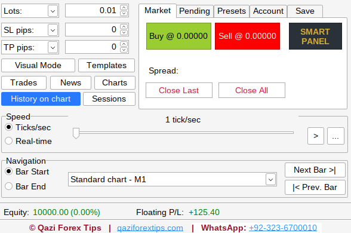
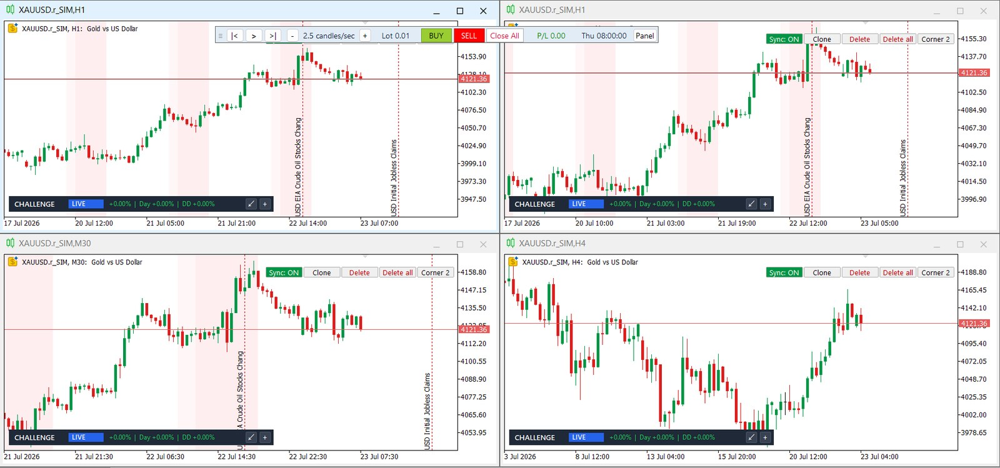
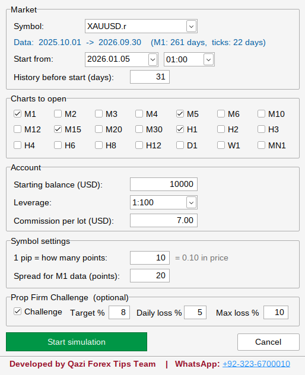
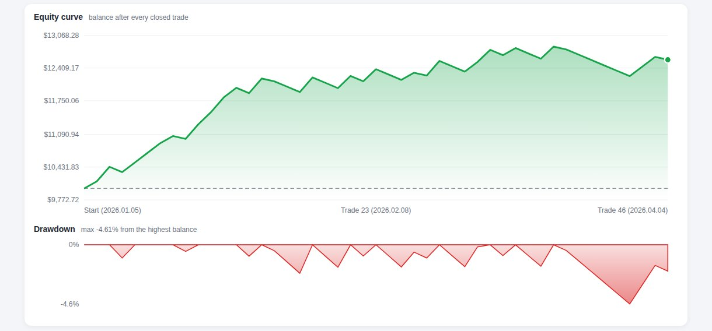
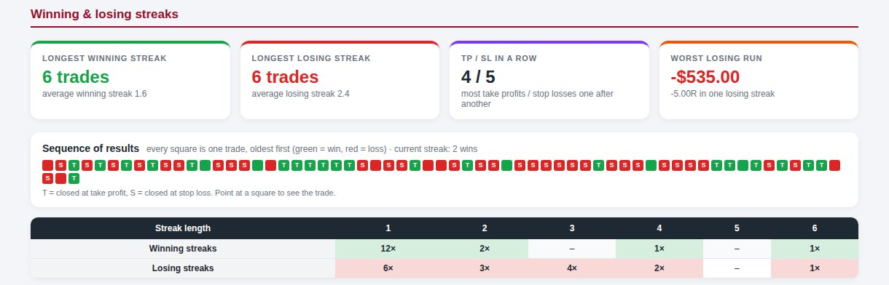
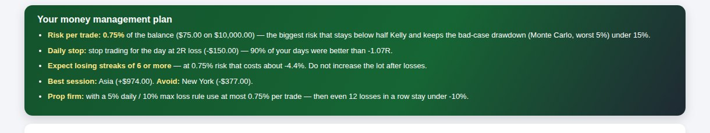

MT5 Replay Simulator · market replay & backtestingTrade the past.
Pass the future.
اپنی اسٹریٹجی کو پیسہ لگانے سے پہلے ٹیسٹ کریں
QFT Replay Simulator turns MetaTrader 5 into a forex market replay and backtesting simulator. Pick any day, play it candle by candle, trade it like live and get a professional report that tells you how much to risk.


A clear chart.
Every control in one slim bar.
The big simulator window now shrinks into the Smart Panel: Prev, Play, Next, speed, lot, Buy, Sell, Close All, floating P/L and the replay time. Put it below the price and keep your eyes on the candles.




Everything a manual trader needs to backtest honestly
The future stays hidden until you press play. You see only what a trader saw at that moment, on every timeframe at once.
Market replay
Candle by candle, tick by tick or real-time speed. Next Bar, Prev Bar to rewind, Go to any date.
Risk in $
Type your risk, drag the SL line. The lot size is calculated live, and a lot below your broker's minimum is refused.
Challenge mode
Profit target, daily loss and max loss checked on every tick, floating P/L included, with a live dashboard.
Pro backtest report
Equity curve, journal, streaks, timing, setups, Monte Carlo test and your own money management plan.
Data Center
Download M1 candles or real ticks from your broker, or import years of M1 data from a CSV file.
All timeframes
M1 to MN1 plus Renko and Range, moving together. Drawings sync across every replay chart.
Sessions & killzones
Asia, London, New York and ICT killzones as chart background, with previous-day levels.
Economic calendar
High-impact news as lines on the chart, with optional auto-pause before the release.
Smart Panel & shortcuts
One slim bar with Play, Next, speed, Buy, Sell and live P/L. Space to play, N / P for bars, B / S to buy and sell. Many more trades per hour.
Fail it here.
Pass it there.
Most traders lose a challenge on one bad day, not on a bad strategy. Practise the exact rules of your prop firm on historical data, as often as you want, before you pay for the real one.
balance, trades closed
equity, from day start
equity, any moment
- Live dashboard on every chart: target progress, today's loss and the dollars of room left.
- Warning colours: blue, then orange at half the limit, red at 80%.
- Fail like a real firm: all trades closed, new trades blocked. Rewind with Prev Bar and trade that day again.





Your SL decides the lot. Not your mood.
- Choose Risk USD or Risk %; Visual Mode switches on by itself.
- SL 5 pips → 0.20 lots. Move it to 25 pips → 0.04 lots. The loss at the SL stays $10.
- Too far for your risk? The window turns red and tells you the largest SL that fits.
A report you can build a plan on
One click exports an HTML report that opens on any phone or browser. It reads your results like a fund manager would and writes your money management plan.



From install to first replay
Install
Copy two files into MT5 (the simulator and its DLL). Allow DLL imports once.
Download data
Data Center: choose the symbol and dates. M1 candles are fast; ticks are exact.
Start a simulation
Pick the start date, balance, leverage, commission and, if you want, the challenge rules.
Trade & export
Replay, trade, rewind. Export the report and read your plan.
Download the simulator
The demo has every feature unlocked: 5 trades in total on the last 31 days of data. For the full version, send your MT5 account number on WhatsApp and you receive your licence key.
Inside the zip: two numbered folders with the simulator (.ex5) and its window library (.dll), a READ ME FIRST, the Install Guide (PDF, English + Roman Urdu), the full User Guide (PDF) and What's new in 3.02 (PDF).
- Unzip and copyRight-click the zip → Extract All. In MT5: File → Open Data Folder → MQL5. Close MT5, then copy folder 1 (
.ex5) intoExpertsand folder 2 (.dll) intoLibraries. - Allow DLL importsTools → Options → Expert Advisors: tick Allow DLL imports. Switch on Algo Trading.
- Attach and replayDrag the simulator onto any chart, for example XAUUSD H1, and start your first replay.
What changed in each version
Licensed users get every new version inside the simulator: Main Menu → Updates. All updates →
Start with the free demo
One license works on one MT5 account. Updates install from inside the simulator with one click.
5 trades in total and the last 31 days of data. Every feature unlocked to try.
Full version, unlimited trades and any period of data.
Full version for a year, with all updates.
Full version for good, with all updates.
Prices and activation: send your MT5 account number on WhatsApp. The key works immediately.
Questions traders ask
How is it different from Soft4FX, FX Replay or Forex Tester?
QFT Replay Simulator runs inside your own MetaTrader 5 with a prop firm challenge mode, lot size from your $ risk and a report with a money management plan. See our side-by-side comparison of forex replay software.
What is a forex replay simulator?
A replay simulator plays past market data again, candle by candle, so you can trade it as if it were live. It is the fastest way to practise and backtest a manual strategy. QFT Replay Simulator does this inside MetaTrader 5.
Is there bar replay in MT5?
MetaTrader 5 has no built-in bar replay for manual trading. QFT Replay Simulator adds it: pick a date, press play or step one candle at a time, and trade with Buy, Sell, SL and TP.
Can I download the simulator for free?
Yes. The free demo download lets you try it with 5 trades. For full use you need a licence key, which you can ask for on WhatsApp.
Does it work on MT4?
The simulator is for MetaTrader 5 (64-bit) on Windows. It works with any MT5 broker.
Does it place real trades on my account?
No. Every trade is simulated with the simulator's own balance. Your real account is never touched.
Which broker do I need?
Any broker on MetaTrader 5. The simulator uses that broker's history, or M1 data you import from a CSV file (HistData, Dukascopy or another broker).
What computer do I need?
A Windows PC or laptop that runs MetaTrader 5 (64-bit), with "Allow DLL imports" switched on. The computer should be online at least once a week for the license check.
Can I practise FTMO-style or any prop firm rules?
Yes. Type the target, daily loss and max loss of your firm in New Simulation. Set a rule to 0 to switch it off.
Is a backtest a guarantee of future profit?
No. It shows what your rules did on past data. The report adds a safety margin (half Kelly, worst 5% Monte Carlo case) because live trading adds slippage and emotions.
Is there a guide?
Yes. A full User Guide (PDF) with screenshots of every window comes with the simulator.
Try it on your own MT5
ڈیمو اور لائسنس کے لیے واٹس ایپ کریں
+92-323-6700010CopiedSend your MT5 account number and the plan you want. Demo questions are welcome.